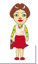
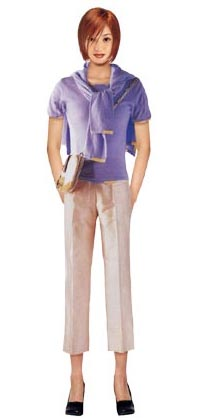
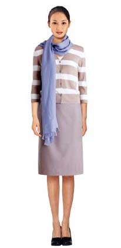

|  | ||||||
|
「당신은 발랄하구 깜직한 귀여운 스타일입니다. 긴 얼굴형에 작고 뚱뚱한 체형은 매일 아침 당신을 속썩였을 테지만 잘만 코디 한다면 당신의 귀여운 매력을 한껏 살리는데 도움이 될 것입니다.」 < 패션 제안 > 당신은 핑크빛 무드의 감성을 지닌 귀여운 여성. 체크 미니 스커트와 작은 칼라의 자켓을 매치 하여 단정하면서도 귀여운 이미지를 표현한다. 앞 코가 둥근 구두나 작은 그립백을 매치하면 큐트한 이미지를 더욱 트랜디하게 표현 할 수 있습니다. 긴 얼굴형은 여성으로서 가장 이상적인 얼굴형이라고 볼 수 있습니다. 고전적인 느낌이 드는 얼굴인데, 어떠한 스타일의 옷도 무난히 소화해낼 수 있지만 얼굴을 짧게 보이게 하기 위해 목의 디자인을 올린 롤 칼라 스타일을 입으면 더욱 세련돼 보입니다. 하지만 대담하게 V자형 으로 파서 입으면 한결 멋스러워 보입니다.   작고 뚱뚱한 체형을 가진 여성들은 옷을 살 때마다 '몸 전체를 다 가릴 수 있는 송은 없을까?'하는 고민을 많이 하는데, 옷을 사도 절대로 히프나 다리가 드러나는 옷을 사리 않으려고 할 것입니다. 이런 스타일은 동색 계열의 차분한 색상을 선택하면 시선을 위아래로 연결시켜 주기 때문에 날씬 하게 보일 수 있다. 특히 상의는 옅게 하의는 짙게 입어보자. 큰 무늬의 의상은 되도록 피하고 작고 섬세한 것을 선택하는 것이 좋습니다. 작고 뚱뚱한 체형은 무조건 가리기만 할 것이 아니라, 나름대로 귀여움을 강조하는 스타일로 입는 것이 좋습니다. 헐렁하게 입는 스타일은 피하고 바지나 스커트는 자기 싸이즈 보다 1인치나 1/2인치 정도 크게 입고, 적당한 H라인이나 플레어가 약간 들어간 것이 어울립니다. 그러나 길이가 좀더 길어 지거나 플레어가 많이 들어가면 작아 보일 수 있으므로 주의한다. 투피스보다 원피스가 무난 하고 길이의 선을 이용하면 키도 커 보입니다. |